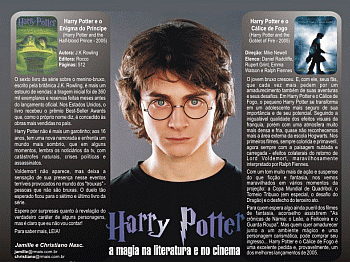
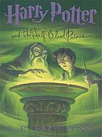

O sexto livro da série sobre o menino-bruxo, escrito pela britânica J.K. Rowling, é mais um estouro de vendas: a tiragem inicial foi de 360 mil exemplares e reservas feitas meses antes do lançamento oficial. Nos Estados Unidos, o livro recebeu o prêmio Best-Seller Awards que, como o próprio nome diz, é concedido às obras mais vendidas no país.
Harry Potter não é mais um garotinho; aos 16 anos, tem uma nova namorada e enfrenta um mundo mais sombrio, que em alguns momentos, lembra os noticiários da tv, com catástrofes naturais, crises políticas e assassinatos.
Voldemort não aparece, mas deixa a sensação de sua presença nesse eventos terríveis provocados no mundo dos "trouxas" - pessoas que não são bruxas. O duelo tão esperado ficou para o sétimo e último livro da série.
Espere por surpresas quanto à revelação do verdadeiro caráter de alguns personagens, mas é claro que eu não vou contar!
Para saber mais, LEIA!